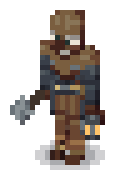
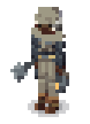
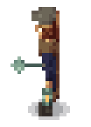
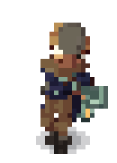

Bonepicker Queen Mag Thrall
Bonepicker Queen Mag Thrall is an elite of The Shardlands.
Bonepicker Queen Mag Thrall is an elite of The Shardlands.
In the game
In the game the Bonepicker Queen is level 29, elite (a group's fight). It is found in Bonepickers' Warren. It can drop Queen's Cudgel (always), Burrower's Hood (25%) and Tunnel-Queen's Coat (25%).
Gallery







